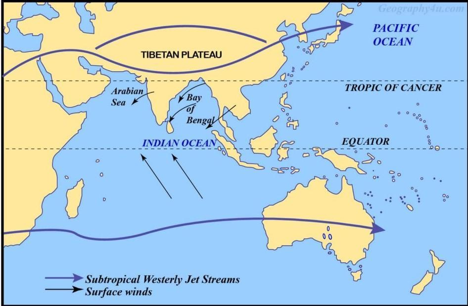
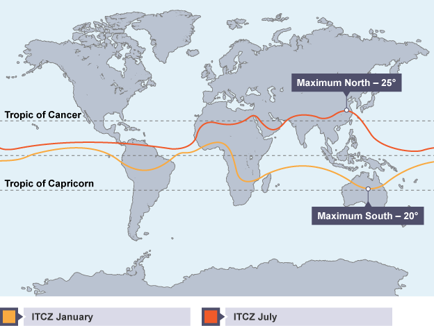
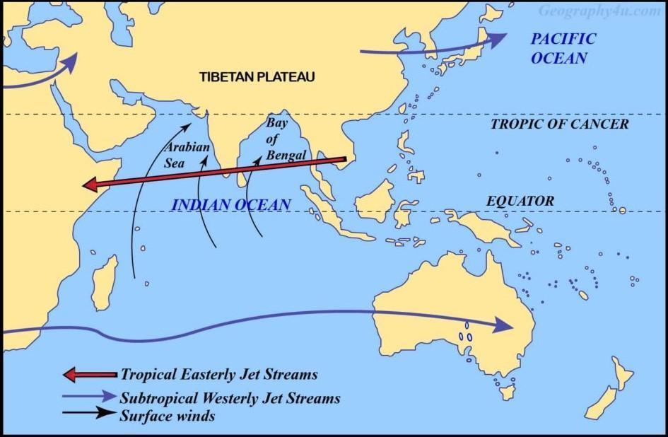
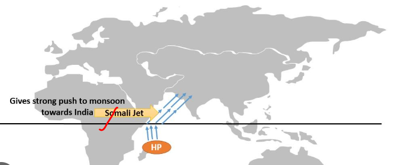
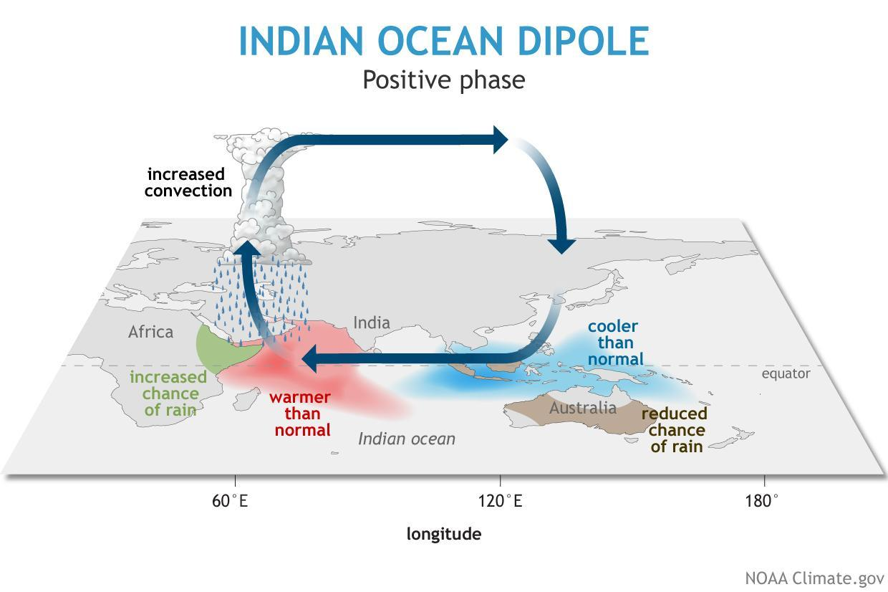
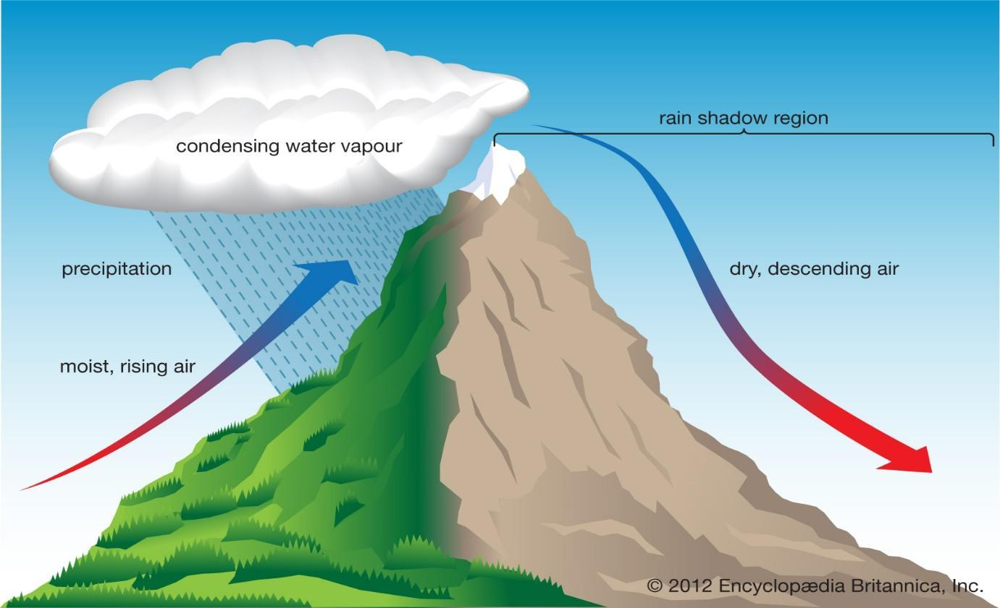

10 Indian Climate
Indian Climate I
Indian Monsoons
The term "Monsoon" is derived from the Arabic word "Mausim" which means seasons.
Monsoons are seasonal winds (Periodic Winds or Secondary winds) that reverse their direction with the change of season. The monsoon is a double system of seasonal winds – They flow from sea to land during the summer and from land to sea during winter.
Monsoons are peculiar to the Indian Subcontinent, South East Asia, parts of Central Western Africa, etc. but they are more pronounced in the Indian Subcontinent compared to any other region. India, Indonesia, Bangladesh, Myanmar, etc. r eceive most of the annual rainfall during the south-west monsoon season whereas South East China, Japan, etc., during the northeast rainfall season. South-west monsoons are formed due to intense low-pressure systems formed over the Tibetan plateau whereas North-east monsoons are associated with high-pressure cells over Tibetan and Siberian plateaus.
Factors responsible for south-west monsoon formation
Intense heating of the Tibetan plateau during summer months. Permanent high-pressure cell in the South Indian Ocean (east to northeast of Madagascar in summer).
Factors that influence the onset of south-west monsoons
Subtropical Jet Stream (STJ). Tropical Easterly Jet (African Easterly Jet). Inter Tropical Convergence Zone.
Factors that influence the intensity of south-west monsoons
Strengths of Low pressure over Tibet and high pressure over the southern Indian Ocean. Somali Jet (Findlater Jet). Somali Current (Findlater Current). Indian Ocean branch of Walker Cell. Indian Ocean Dipole
Factors responsible for north-east monsoon formation
Formation and strengthening of high-pressure cells over the Tibetan Plateau and Siberian Plateau in winter. Westward migration and subsequent weakening of high-pressure cells in the Southern Indian Ocean. Migration of ITCZ to the south of India.
Mechanism of Indian Monsoons
Mechanism of Indian Monsoons – Based on Modern Theories
Besides differential heating, the development of monsoon is influenced by the shape of the continents, orography (mountains), and the conditions of air circulation in the upper troposphere i.e. jet streams.
March to May As the summertime approaches, there is increased solar heating of the Indian subcontinent and the Tibetan Plateau. From March to May, the building up of the monsoon cell is blocked by the STJ – Subtropical Jet Stream which tends to blow to the south of the Himalayas. Northwest India and Plains region are occupied by the Subtropical High-Pressure Belt. This high pressure belt undermines the influence of low-pressure cells over Tibet. As long as the STJ is in this position the development of summer monsoons is inhibited.

Subtropical Jet Stream – STJ in Winter The Westerly jet stream blows at a very high speed during winter over the subtropical zone. This jet stream is bifurcated by the Himalayan ranges (physical barrier) and Tibetan Plateau (thermal barrier). The two branches reunite off the east coast of China. The northern branch of this jet stream blows along the northern edge of the Tibetan Plateau. The southern branch blows to the south of the Himalayan ranges along 25° north latitudes. A strong latitudinal thermal gradient (differences in temperature), along with other factors, is responsible for the development of southerly jets. The southern branch is stronger, with an average speed of about 240 kmph compared with 70 to 90 kmph of the northern branch. Air subsiding beneath this upper westerly current gives dry out blowing northerly winds from the subtropical anticyclone over north-western India and Pakistan.
Late May and Early June In the peak summer months (25th of May – 10th of Jun), with the apparent northward movement of the sun, the southern branch of the Subtropical Jetstream (STJ), which flows to the south of the Himalayas, shifts to the north of the Himalayas. When the sun’s position is about to reach the Tropic of Cancer (June), the STJ shifts to the north of the Tibetan Plateau (1st of Jun – 20th of June). The ITCZ is close to its peak position over the Tibetan Plateau. The altitude of the mountains initially disrupts the jet, but once it has cleared the summits, it is able to reform over central Asia. Its movement towards the north is one of the main features associated with the onset of the monsoon over India.

The onset of Monsoons (1 st or 2 nd week of June)
With the northward shift of STJ, an Easterly Jet is formed over the Indian plains. It generally forms in the first week of June and lasts till late October. It can be traced in the upper troposphere right up to the west coast of Africa. The northward shift of STJ and ITCZ moves the subtropical high-pressure belt to the north of the Tibetan Plateau, and the Easterly Jet creates a low-pressure region in the Indian plains as the Easterly Jet creates anti-cyclonic conditions in the upper troposphere. With the STJ out of the way, the subcontinental monsoon cell develops very quickly indeed, often in a matter of a few days. The low pressure in the northern plains coupled with the intense low of the Tibetan Plateau leads to the sudden onset of southwest monsoons (1st of Jun – 20th of June). The monsoon cell is situated between the Indian Ocean (North of Madagascar) (High-Pressure Cell) and the Tibetan plateau (Low-Pressure Cell).

Tropical Easterly Jet (TEJ) There are major high-velocity winds in the lower troposphere called low-level jets (LLJs). In the tropics, the most prominent of these are the Somali Jet and the African Easterly Jet (Tropical Easterly Jet). The TEJ is a unique and dominant feature of the northern hemisphere summer over southern Asia and northern Africa. The TEJ is found between 5° and 20°N. It is fairly persistent in its direction and intensity from June through the beginning of October. TEJ comes into existence quickly after the STJ has shifted to the north of the Himalayas (Early June). TEJ flows from east to west over peninsular India at 6 – 9 km and over the Northern African region. The formation of TEJ results in the reversal of upper air circulation patterns (High-pressure switches to low-pressure) and leads to the quick onset of monsoons. Recent observations have revealed that the intensity and duration of heating of Tibetan Plateau has a direct bearing on the amount of rainfall in India by the monsoons. When the summer temperature of air over Tibet remains high for a sufficiently long time, it helps strengthen the easterly jet and results in heavy rainfall in India. The easterly jet does not come into existence if the snow over the Tibet Plateau does not melt. This hampers the occurrence of rainfall in India. Therefore, any year of thick and widespread snow over Tibet will be followed by a year of weak monsoons and less rainfall.
Rainy season The sub-tropical easterly jet fluctuates between the plains region of India and peninsular India varying the intensity of rainfall from location to location. Warmth and moisture are fed into the cell by a lower-level tropical jet stream (Somali Jet) which brings with its air masses laden with moisture from the Indian Ocean.
The end of the Monsoon season The end of the monsoon season is brought about when the atmosphere over the Tibetan Plateau begins to cool (August – October), this enables the STJ to transition back across the Himalayas. With the southward shift of ITCZ, the subtropical high-pressure belt returns to the Indian plains, and the rainfall ceases. This leads to the formation of an anticyclonic winter monsoon cell typified by sinking air masses over India and relatively moisture-free winds that blow seaward. This gives rise to relatively settled and dry weather in India during the winter months.
Indian Monsoons – Role of Somali Jet
The progress of the southwest monsoon towards India is greatly aided by the onset of the Somali jet that transits Kenya, Somalia, and the Sahel. It was observed to flow from Mauritius and the northern part of the island of Madagascar before reaching the coast of Kenya at about 3º S. It strengthens permanent high near Madagascar and also helps to drive S W monsoons towards India at a greater pace and intensity. The current in the Arabian Sea associated with the Somali Jet is called the Findlater Current. Its direction is influenced by the monsoon winds. It reverses its direction with the monsoon winds. Findlater Current in the s-w monsoon season creates a zone of coastal upwelling near the horn of Africa (good for fishing). It doesn’t have a significant impact on Indian Monsoons because the zone of upwelling is very small unlike in the case of Indian Ocean Dipole.

Indian Monsoons – Role of Indian Ocean Dipole

Indian Ocean Dipole is a recently discovered phenomenon that has a significant influence on Indian monsoons. Indian Ocean Dipole is an SST anomaly (Sea Surface Temperature Anomaly – different from normal) that occurs occasionally in the Northern or Equatorial Indian Ocean Region (IOR). The Indian Ocean Dipole (IOD) is defined by the difference in sea surface temperature between two areas (or poles, hence a dipole) – a western pole in the Arabian Sea (western Indian Ocean) and an eastern pole in the eastern Indian Ocean south of Indonesia. IOD develops in the equatorial region of the Indian Ocean from April to May peaking in October. Positive IOD winds over the Indian Ocean blow from east to west (from the Bay of Bengal towards the Arabian Sea). This results in the Arabian Sea (the western Indian Ocean near the African Coast) being much warmer and the eastern Indian Ocean around Indonesia becoming colder and dry. In the negative dipole year, the reverse happens to make Indonesia much warmer and rainier. Positive IOD is good for Indian Monsoons as more evaporation occurs in warm water. Similar to ENSO, the atmospheric component of the IOD is named as Equatorial Indian Ocean Oscillation (EQUINOO) (Oscillation of pressure cells between the Bay of Bengal and the Arabian Sea). During the positive phase of the ‘Equatorial Indian Ocean Oscillation (EQUINOO),’ there is enhanced cloud formation and rainfall in the western part of the equatorial ocean near the African coast while such activity is suppressed near Sumatra.
Indian Climate
India’s 60% landmass is situated north of the tropic of Cancer i.e. in the temperate belt but the climate closely resembles the climate of a tropical country. The Indian subcontinent is separated from the rest of Asia by the Himalayan ranges which block the cold air masses moving southwards from Central Asia. As a result, during winters, the northern half of India is warmer by 3°C to 8°C than other areas located on the same latitudes.
Due to the overhead position of the sun, during summer, the climate in the southern parts resembles an equatorial dry climate. The north Indian plains are under the influence of hot, dry wind called ‘loo’ blowing from the Thar, Baloch, and Iranian Deserts, increasing the temperatures to a level comparable to that of the southern parts of the country.
The seasonal reversal of winds in the Arabian Sea and Bay of Bengal gives India a typical tropical monsoon climate. Thus, the Indian climate, to be precise, is tropical monsoon type rather than just a tropical or half-temperate climate.
Features of Indian Climate
Because of its location, topography, altitude, and distance from the sea; India has high regional climatic diversity The climate in most of the regions is characterized by distinct wet and dry seasons. Some places like Thar desert, and Ladakh have no wet season. Mawsynram and Cherrapunji in Meghalaya receive around 1,100 cm of annual rainfall while at Jaisalmer the annual rainfall rarely exceeds 12 cm. The Ganga delta and the coastal plains of Odisha see intense rainfall in July and August while the Coromandel Coast (Tamil Nadu coast and Southern AP coast) goes dry during these months and places like Goa, Hyderabad, and Patna receive south-west monsoon rains by the first quarter of June while the rains are awaited till early July at places in Northwest India. Diurnal and annual temperature ranges are substantial. The highest diurnal temperature ranges occur in the Thar desert, and the highest annual temperature ranges are recorded in the Himalayan regions. Both diurnal and mean annual temperature ranges are the lowest in coastal regions. In December, the temperature may dip to – 40°C at some places in J&K while in many coastal regions average temperature is 20-25°C. Winters are moderately cold in most of the regions while the summers are extremely hot.
Factors Influencing Indian Climate
Latitudinal location Distance from the Sea The Himalayas Physiography Monsoon Winds El Nino and La Nina Tropical Cyclones and Western Disturbances Latitudinal location The mainland of India extends between 8°N to 37°N. Areas south of the Tropic of Cancer are in the tropics and hence receive high solar insolation. The summer temperatures are extreme, and winter temperatures are moderate in most of the regions. The northern parts, on the other hand, lie in the warm temperate zone. They receive comparatively less solar insolation. But summer is equally hot in north India because of loo. Winter is very cold due to cold waves brought by the western disturbances.
Distance from the Sea Coastal regions have a moderate or equable or maritime climate whereas interior locations are deprived of the moderating influence of the sea and experience extreme or continental climate.
Himalayas The Himalayas act as a climatic divide between India and Central Asia. During winter, the Himalayas protect India from cold and dry air masses of Central Asia. During monsoon months these mountain ranges act as an effective physical barrier for rain-bearing south-west monsoon winds and cause Orographic Rainfall. Himalayas divide the Bay of Bengal branch of monsoon and if Himalayas were not present, the monsoon winds would simply move into China, and most of north India would have been a desert.
Physiography Places on the windward side of an orographic barrier receive a great amount of rainfall whereas those on the leeward side remain arid to semi-arid due to rain-shadow effect.

Example- The southwest monsoon winds from the Arabian Sea strike at the Western Ghats and cause copious rainfall in the Western Coastal plain and the western slopes of the Western Ghats. On the contrary, vast areas of Maharashtra, Karnataka, Telangana, Andhra Pradesh, and Tamil Nadu lie in the rain shadow of the Western Ghats and receive scanty rainfall. Monsoon winds flowing in Rajasthan and Gujarat are not obstructed by any orographic barrier, and hence these regions receive no rainfall. Monsoon winds blow almost parallel to Aravalli, and also, they are not of imposing height to cause an orographic effect except for some places like Mount Abu; hence there is no orographic rainfall. Mawsynram and Cherrapunji are the wettest places on earth with mean annual rainfall of over 1100 cm. Copious rainfall in these places is due to the funneling effect followed by orographic upliftment. Clouds are channeled into a narrow region between mountains and hence the cloud density is extraordinary.
Monsoon Winds The most dominating factor of the Indian climate is the 'monsoon winds'. The complete reversal of the monsoon winds brings about a sudden change in the seasons. The harsh summer season suddenly gives way to the monsoon or rainy season. The southwest monsoons from the Arabian Sea and the Bay of Bengal bring rainfall to the country. The north-eastern winter monsoon does not cause much rainfall except along the Coromandel coast (TN coast) after getting moisture from the Bay of Bengal.
Tropical Cyclones and Western Disturbances Tropical cyclones originate in the Bay of Bengal and the Arabian Sea and influence large parts of peninsular India. The majority of the cyclones originate in the Bay of Bengal and influence the weather conditions during the southwest monsoon season . Some cyclones are born during the retreating monsoon season, i.e., in October and November,and influence the weather conditions along the eastern coast of India. The western disturbances originate over the Mediterranean Sea and travel eastward under the influence of westerly jet streams. They influence the winter weather conditions over most of the northern plains and Western Himalayan region.